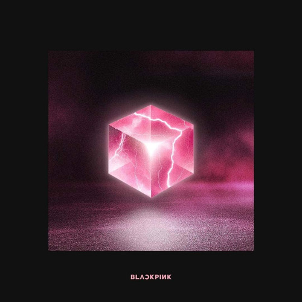
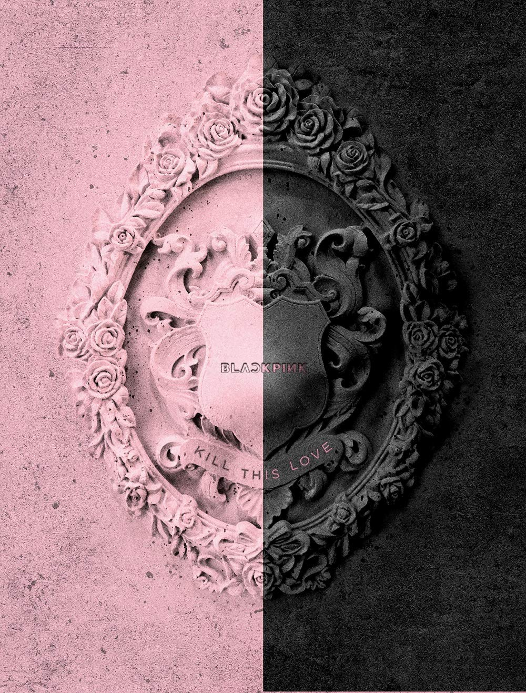
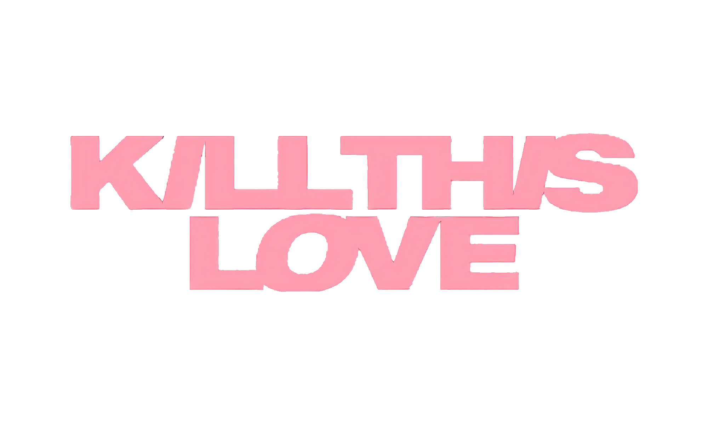
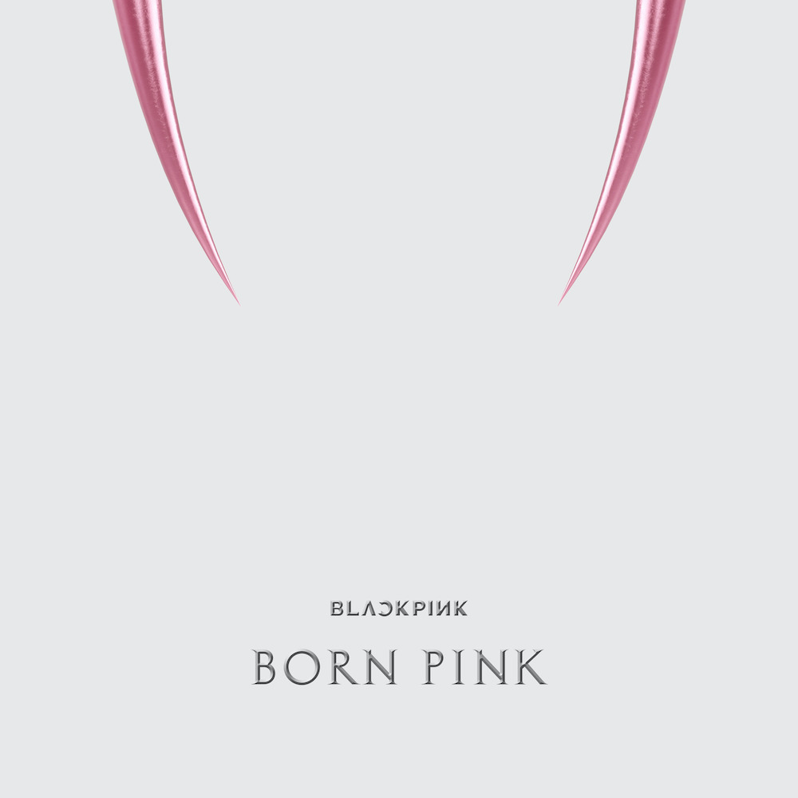

La discografía de blackpink
Debutaron con el sencillo Square One el 8 de agosto de 2016. La primera canción, titulada «Whistle», fue una «pista hip-hop minimal» La segunda canción titulada «Boombayah» Los sencillos debut de BLACKPINK alcanzaron el número uno en el chart de Billboard World Digital Songs. Fueron el grupo más rápido en hacerlo, y el tercer artista coreano en ocupar las dos primeras posiciones después de PSY y Big Bang. «Whistle» encabezó los charts digitales, de descarga, de streaming y móviles de Gaon en agosto de 2016. También alcanzaron el número uno en las listas semanales, de popularidad, de vídeo musical y de música de K-pop del sitio de música más popular de China QQ Music.


El 15 de junio, el grupo lanzó su primer EP titulado Square Up. El sencillo «Ddu-Du Ddu-Du» debutó en el número 17 de la Official Trending Chart del Reino Unido, convirtiéndose en el primer grupo K-pop femenino en entrar en la lista desde su lanzamiento en 2016. El sencillo también debutó en los Billboard Hot 100 como la canción de mayor éxito de todos los tiempos por un grupo de K-pop femenino, ingresando a la lista en el puesto N.º 55 con 12,4 millones de reproducciones en EE. UU. y 7.000 descargas vendidas en la semana de seguimiento, que terminó el 21 de junio de 2018, según Nielsen Music.

Su tercer mini álbum, Kill This Love, encabezado por un sencillo homónimo, fue lanzado el 5 de abril de 2019. El álbum debutó en el número 24 en el Billboard 200, mientras que el sencillo principal alcanzó el número 41 en el Billboard Hot 100, convirtiéndose en los lanzamientos con las listas más altas de una actuación femenina coreana en las dos listas principales de Billboard. «Kill This Love» fue incluida en la lista de las 100 mejores canciones de 2019. Además, su videoclip fue el más visto en YouTube en sus primeras 24 horas, con 56,7 millones de visualizaciones. De forma paralela, la canción «Forever Young», lanzada como un lado B de su anterior EP Square Up (2018), superó las 2.5 millones de descargas en diciembre de 2019, lo que la convirtió en la quinta canción del grupo en general y la segunda en lograr una certificación de Platino por descargas de la Asociación de Contenido Musical de Corea (KMCA), después de «Ddu-Du Ddu-Du».

Blackpink lanzó su primer álbum de estudio coreano, The Album, el 2 de octubre de 2020, con «Lovesick Girls» como su tercer y principal sencillo. Antes del estreno exclusivo de su vídeo musical, Blackpink apareció en el nuevo programa musical original de Youtube, Released, siendo su primer artista destacado, que incluyó momentos de «acceso sin filtros» del grupo. The Album alcanzó el puesto número 2 en el Billboard 200 y en la lista UK Albums Chart del Reino Unido, lo que convirtió a Blackpink en el acto femenino coreano con las posiciones más altas en cada una de dichas listas. El álbum también estableció un récord de ventas de álbumes en la primera semana para un grupo femenino de Corea, con 590.000 copias vendidas en solo un día después del lanzamiento del álbum físico. Posteriormente se convirtió en el primer grupo femenino de k-pop en alcanzar la certificación Million Seller con The Album, vendiendo aproximadamente 1,2 millones de copias en menos de un mes después de su lanzamiento

El 16 de septiembre de 2022 fue lanzado Born Pink, junto con el sencillo «Shut Down». El 17 de septiembre de 2022, Hanteo Chart informó que vendió un total de 1 011 266 copias del álbum solo el 16 de septiembre, lo que lo convirtió en el primer álbum de cualquier artista femenina en la historia de Hanteo en vender más de un millón de copias el primer día de su lanzamiento.Tras el término de su primera semana, Hanteo informó más de 1,54 millones de copias vendidas, rompiendo el récord de las mayores ventas en la primera semana de un grupo femenino de K-pop en la historia. El 22 de septiembre, la Korea Music Content Association a través de Circle Chart, certificó un total de 2 141 281 copias vendidas, que incluyen exportaciones a Norteamérica, Europa y las ventas internas durante tan solo un día y medio desde su lanzamiento. En los Estados Unidos, Born Pink debutó en el número uno en el Billboard 200 con 102 000 unidades equivalentes a álbum, incluidas 75 500 ventas de álbumes puros, 25 000 ventas equivalentes a transmisiones y 1,500 ventas equivalentes a pistas. Con esto se convirtió en el primer álbum de una artista surcoreana femenina en encabezar la lista y el primer álbum de un grupo femenino en hacerlo desde Welcome to the Dollhouse de Danity Kane en 2008.